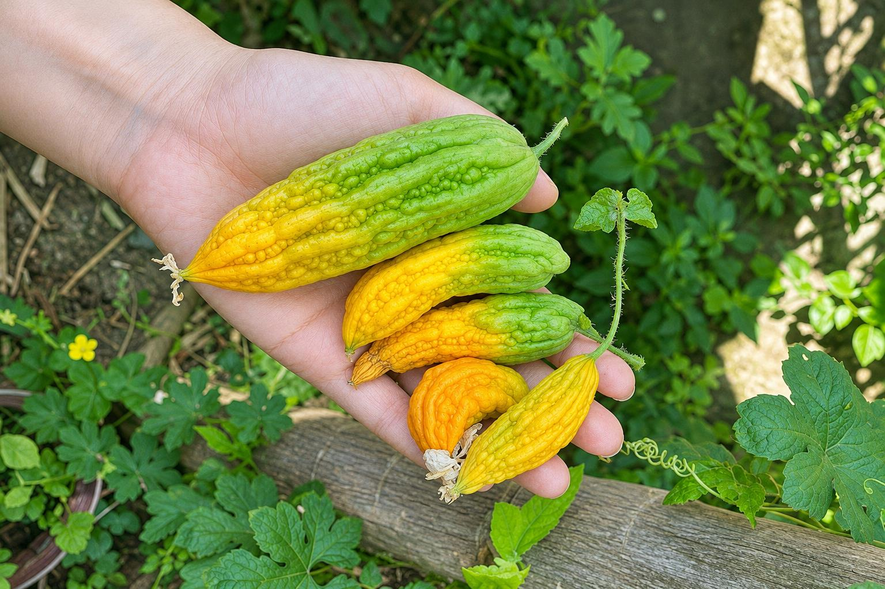
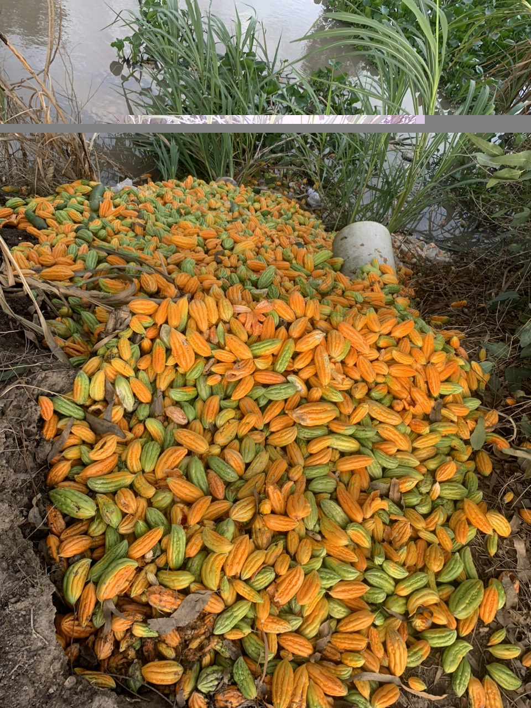

Kinh nghiệm thực chiến trị ruồi vàng hại khổ qua ở miền Tây
Dân trồng rẫy miền Tây mình ai cũng rành, khổ qua hái xoay vòng cứ 2–3 bữa là cắt một lứa. Bởi vậy, trị ruồi vàng trên khổ qua không thể làm kiểu sách vở được — xịt thuốc tràn lan thì vừa tốn bạc triệu, vừa nóng bông rụng trái non, lại kẹt thời gian cách ly.
Để giữ giàn khổ qua sạch dòi, trái suôn mượt cân ký bán được giá, bà con cứ áp dụng đúng bài "Treo đuổi – Đánh bẫy – Xịt đúng thuốc, đúng giờ" mà nhà vườn miền Tây đang làm thực tế dưới đây.

1. Mẹo treo xua đuổi rẻ tiền mà cực nhạy
Trước khi đụng tới bình xịt, bà con phải chặn đường không cho ruồi bay vô giàn:
- Treo băng phiến (long não): Đây là chiêu nhà vườn miền Tây xài nhiều nhất vì rẻ mà hiệu quả. Bà con mua long não viên, bỏ 1–2 viên vô bịch ni-lông nhỏ hoặc chai nhựa có đục vài lỗ thông hơi, rồi treo dọc theo giàn khổ qua. Mùi long não hắc nồng làm ruồi vàng rất kỵ, bay tới nghe mùi là dạt ra liền.
- Treo bẫy Vizubon-D ngoài bờ bao: Ra tiệm vật tư nông nghiệp mua hộp Vizubon-D (gồm 1 chai dẫn dụ và 1 chai diệt ruồi), đổ chung vô lắc đều rồi thấm 1–2ml vào bông gòn bỏ trong chai nhựa đục lỗ hoặc lồng bẫy. Treo 2–3 bẫy cho mỗi công đất (1.000m²), nhớ treo ngoài rìa rẫy, chỗ râm mát, đầu gió và cách mặt đất chừng 1,5–2m. Đừng treo ngay giữa giàn kẻo vô tình dụ ruồi từ rẫy hàng xóm bay qua phá rẫy mình. Cứ 15–20 ngày đổ xác ruồi ra rồi châm thuốc mới.

2. Các loại thuốc xịt thực tế hay dùng
Tới lúc ruồi vàng xuất hiện nhiều, bà con ra đại lý mua đúng mấy dòng thuốc thực tế sau và nhớ luân phiên để ruồi không bị lờn:
- Nhóm thuốc gốc Cúc (xịt rớt nhanh, mùi nồng xua đuổi mạnh): Các dòng quen mặt ở miền Tây như Sherpa, Fastac, Karate, Decis hoặc các chai chuyên trị ruồi vàng dạng nước sữa chứa hoạt chất Alpha-cypermethrin, Permethrin, Phoxim. Nhóm này giá mềm, mùi hắc nên xua đuổi ruồi khá tốt, ưu tiên chọn dạng nước sữa (SC, CS) hoặc pha đúng liều để mát bông, không làm nám trái non.
- Nhóm "thuốc hôi" xông hơi mạnh: Bà con hay tìm Selecron 500EC (hoạt chất Profenofos). Thuốc này có mùi rất nồng, xịt lúc cây mới ra trái bói hoặc khi mật số ruồi dày để vừa diệt vừa đuổi. Tuy nhiên, tuyệt đối không xịt lúc nắng gắt và không tăng liều vì dễ làm nóng dây, rụng bông.

3. Kỹ thuật xịt "trúng tim đen" của dân làm rẫy
Cùng một chai thuốc nhưng người xịt sạch ruồi, người xịt hoài không hết là do cách làm:
- Canh đúng giờ ruồi đi ăn: Ruồi vàng chỉ bay vô giàn chích trái mạnh nhất vào sáng sớm (6h30–8h30) và chiều mát (16h–17h). Trưa nắng nó trốn kỹ dưới tán lá và bụi cỏ, xịt giờ đó chỉ tốn tiền thuốc.
- Xịt luôn cỏ bờ và mặt dưới lá: Ban đêm ruồi vàng ngủ ở mấy bụi cỏ, bờ rào quanh rẫy. Khi xịt xong giàn khổ qua, bà con nhớ quét thêm một đường thuốc dọc theo bờ cỏ xung quanh để triệt chỗ trú ẩn của nó.
Dọn sạch trái bị chích: Thấy trái nào vàng ệch, có chấm chích xì mủ hay rụng dưới gốc là phải lượm sạch vô bao ni-lông cột kín miệng đem phơi nắng hoặc chôn sâu với vôi. Đừng thấy tiện tay quăng đại xuống mương hay đầu bờ, dòi nó chui xuống đất hóa nhộng rồi vài bữa nở ra cả bầy ruồi mới chích tiếp.
